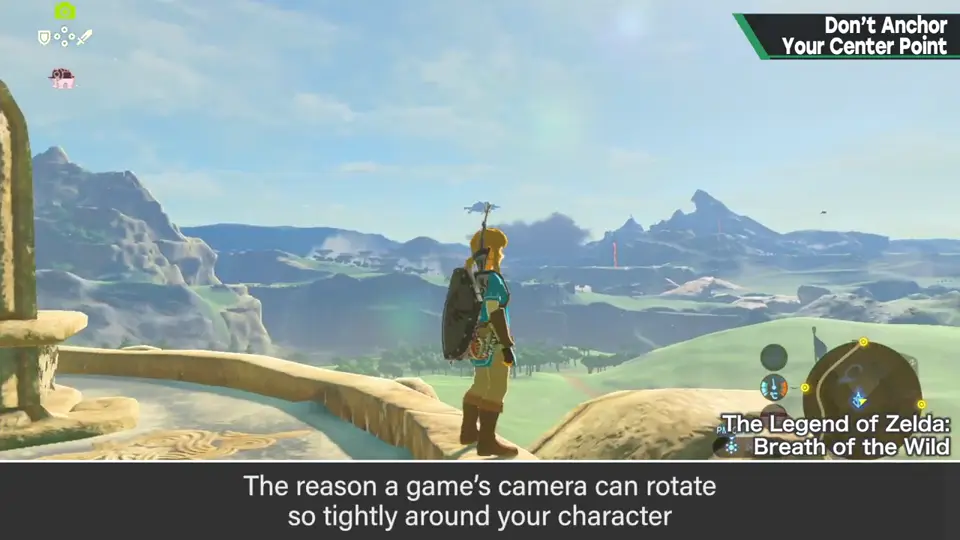
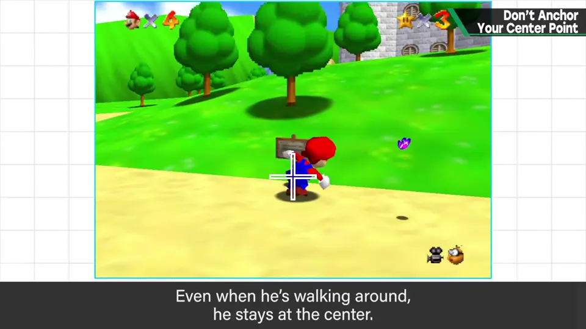
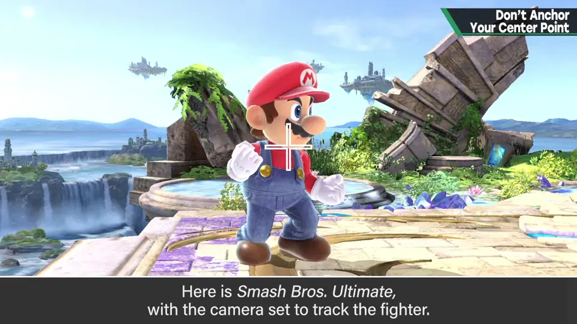
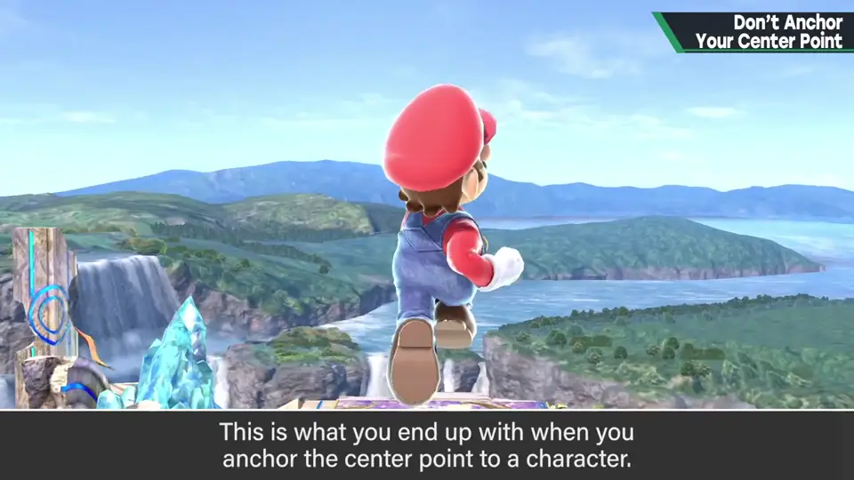
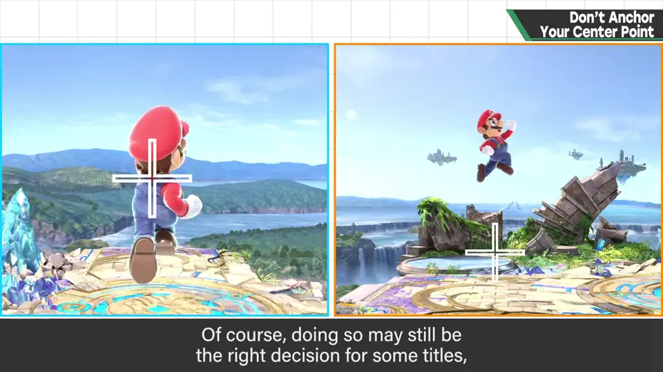
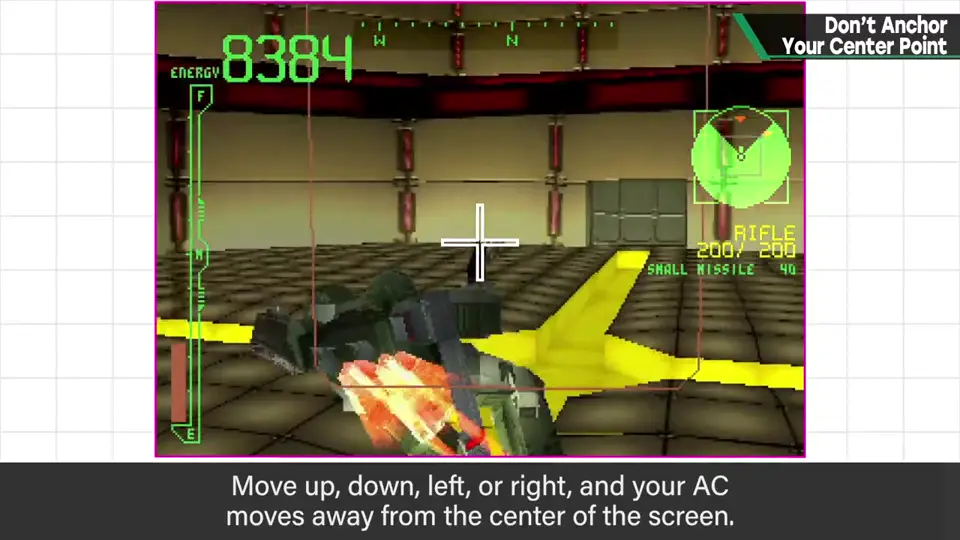
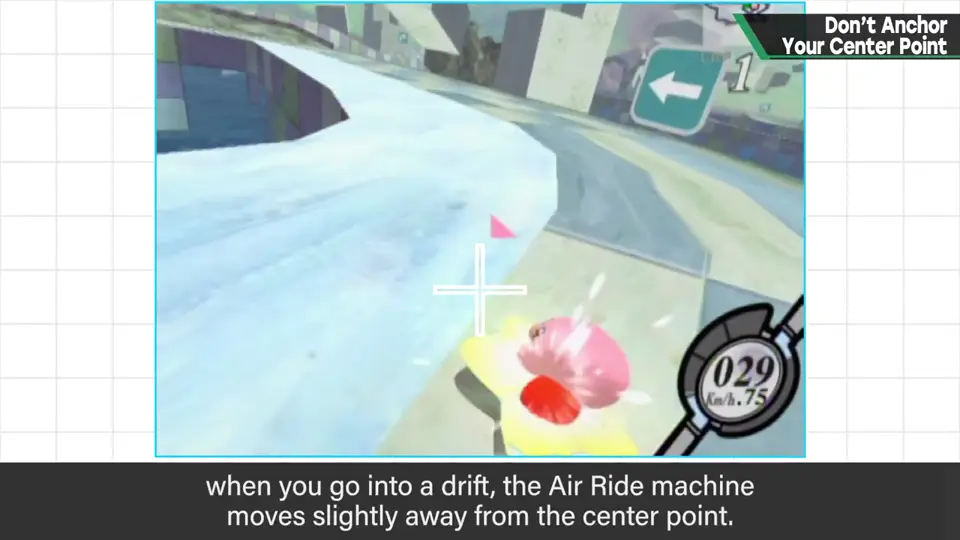
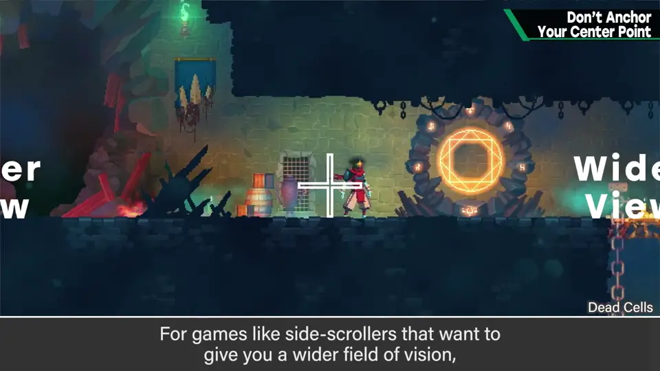

速览
3D 游戏的镜头有注视点，平常看不见，但有镜头的游戏一定有。能以角色为中心环视，是因为注视点大致在角色位置——即注视点跟着角色。但不能把注视点黏在角色上。看《超级马里奥 64》：注意马里奥在整个画面中的位置——走路时保持在画面中央，理所当然；但一跳跃就离开中央，相对位置往上——看似理所当然其实并非如此。用《大乱斗 特别版》的斗士追随演示：注视点直接黏在角色上，就看不出跳多高。所以注视点在 Y 方向不跟随（或减弱跟随），让人感受到高度；注视点固定又会看不出怎么动。适合黏死的作品也可以，但它对游戏演出大有帮助，只是黏着就太乏味。《Armored Core》上下左右操作时 AC 会稍离画面中央，让闪过的子弹和导弹更易看见、魄力增加。像赛车游戏的追尾视角那种要求精确驾驶的，固定中央也许可以；但《卡比的空中滑翔》漂移过弯时机器会稍偏离注视点，为了增强操作实感、漂移中穿过墙的感觉。动作游戏中也有为了更宽的视野，把前方画面留得更宽。不要理所当然地让注视点跟随，赋予符合游戏的规格与演出，非常重要。
1. 注视点是什么 0:02
3D 游戏的镜头有一个注视点（center point）。它平时看不见，但只要游戏里有镜头就一定有。

能以角色为中心转动视角环视，是因为注视点大致在角色的位置——也就是说注视点黏在角色身上。
2. 马里奥 64 0:36
看《超级马里奥 64》，注意马里奥相对整个画面的位置：走路时保持在画面中央——看起来很理所当然。但一跳跃，他就离开画面中央，相对位置往上方去。这看似理所当然，其实并非如此。


3. 黏死会看不出高度 1:01
用《大乱斗 特别版》的斗士追随来示范：若照常把注视点黏在角色上，就是这样——跳得多高根本看不出来。


适合黏死的作品那样做也行，但它能大大帮助游戏演出，只是黏着就太乏味了。
4. 偏离中心的演出 1:40
《Armored Core》：上下左右操作时，AC 会稍微离开画面中央，于是闪过的子弹和导弹更容易看见，魄力也增加。


像赛车游戏追尾视角那样需要精确驾驶的，固定在中央也许可以。但《卡比的空中滑翔》在漂移过弯时，机器会稍偏离注视点——为了更有操作的实感、增强漂移中穿过墙边的感觉。
动作游戏里也有为了让视野稍宽，把前方画面留得更宽的做法。

自测题
1. 为什么不能把注视点黏死在角色上？
跳跃时角色始终在中央，看不出跳了多高；会让演出乏味。 1:10
2. 《超级马里奥 64》跳跃时镜头怎么处理？
走路时马里奥在中央，跳跃时注视点不（完全）跟随 Y 方向，马里奥往画面上方移动，能感受高度。 0:49
3. 《卡比的空中滑翔》为什么让机器在漂移时偏离注视点？
增强操作的实感，以及漂移中穿过墙边的感觉。 2:05